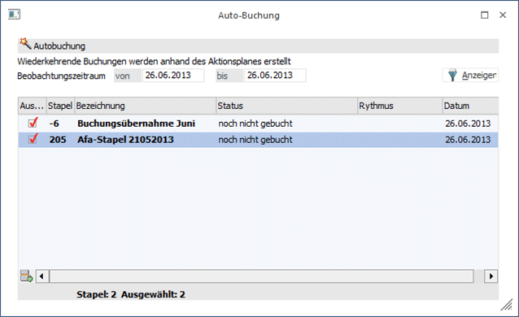
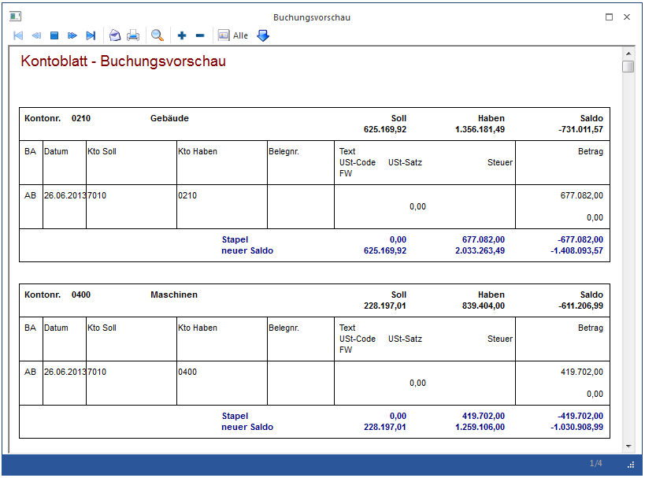
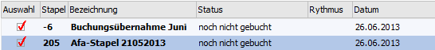
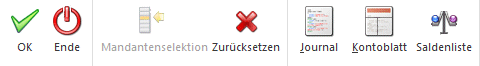

Im Menüpunkt
1 Buchen
1 Auto-Buchung
können wiederkehrende Buchungen abgerufen werden. Voraussetzung dafür ist, dass bereits ein Stapel erfasst wurde, in dem die wiederkehrenden Buchungen eingetragen wurden. Außerdem muss ein Aktionsplan definiert worden sein, in dem hinterlegt wird, welcher Stapel wann verbucht werden soll (nähere Informationen siehe Kapitel Aktionsplan).
Nach Aufruf des Menüpunktes muss zuerst der Beobachtungszeitraum eingegeben werden. Standardmäßig wird hier das aktuelle Systemdatum vorgeschlagen. Durch Anklicken des Anzeigen-Buttons werden in der Tabelle alle Stapel angezeigt, die aufgrund des Beobachtungszeitraumes gebucht werden sollen (welche Stapel wann gebucht werden sollen, wird anhand des Aktionsplanes festgelegt).

Durch Deaktivieren der Checkbox "Auswahl" können einzelne Stapel von der Verbuchung ausgenommen werden.
Durch Anklicken des Hinzufügen-Buttons oder durch Drücken der Tastenkombination ALT + H können auch neue Stapel, die nicht im Aktionsplan definiert wurden, ebenfalls zur Verbuchung freigegeben werden.
In der letzten Zeile der Tabelle werden die Anzahl der angezeigten Stapel und die Anzahl der ausgewählten Stapel angezeigt (nicht jeder angezeigter Stapel muss auch unbedingt verbucht werden).
Durch Anklicken des Journal-Buttons kann ein Buchungsjournal aller in den selektierten Stapeln hinterlegten Buchungen ausgegeben werden.
Durch Anklicken des Kontoblatt-Buttons wird eine Übersicht aller in den Stapeln enthaltener Konten angezeigt. Zuerst wird der aktuelle Saldo der einzelnen Konten angezeigt. Dann werden alle Buchungen, die für dieses Konto vorhanden sind, angezeigt. Danach werden die daraus resultierenden Summen (Soll, Haben, Saldo) der einzelnen Konten angezeigt.

Durch Anklicken des OK-Buttons werden alle aktivierten Stapel verbucht (je nach Einstellung im Mandantenstamm in die gültigen Perioden). Tritt dabei ein Fehler auf, z.B. Buchungen in gesperrten Perioden, so wird die Fehlermeldung in der Tabelle in der entsprechenden Zeile ausgegeben.

Durch Drücken der ESC-Taste wird das Fenster wieder geschlossen.
Wurden Stapel verbucht, werden diese - wenn der gleiche Beobachtungszeitraum nochmals gewählt wird - nicht wieder vorgeschlagen.
Buttons
Ø

Ø Ok
Es wird eine Auto-Buchung mit den festgelegten Einstellungen erstellt.
Ø Ende
Schließt das Fenster.
Ø Mandantenselektion
Über diesen Button erhält man eine Auswahl aller möglichen Konsolidierungs-Mandanten. Voraussetzung für die Auswahl des Buchungsstapels in der Autobuchung ist, dass bereits ein Stapel erfasst wurde, in dem die wiederkehrenden Buchungen eingetragen wurden. Außerdem muss ein Aktionsplan definiert worden sein, in dem hinterlegt wird, welcher Stapel wann verbucht werden soll.
Die Auto-Buchung kann aus dem Hauptmandanten oder auch aus einem Submandanten aufgerufen werden. Für jeden Mandanten wird ein Stapel-Journal mit Angabe der Mandantennummer und des Mandantennamens auf den Drucker / Spooler ausgegeben. Die Verbuchung der selektierten Buchungsstapel erfolgt dann in dem jeweiligen Mandanten.
Ø Zurücksetzen
Über den Button Zurücksetzen wird der Ursprungszustand, so als ob die Autobuchung neu gestartet wurde, wieder hergestellt.
Ø Journal
Es wird das Journal ausgegeben
Ø Kontoblatt
Das Kontoblatt wird angezeigt.
Ø Saldenliste
Durch Betätigen des Saldenliste-Buttons wird eine neue Liste geöffnet, in der für die im Stapel verwendeten Konten der alte Saldo, die Summen der Buchungen und der entsprechende neue Saldo angezeigt werden.